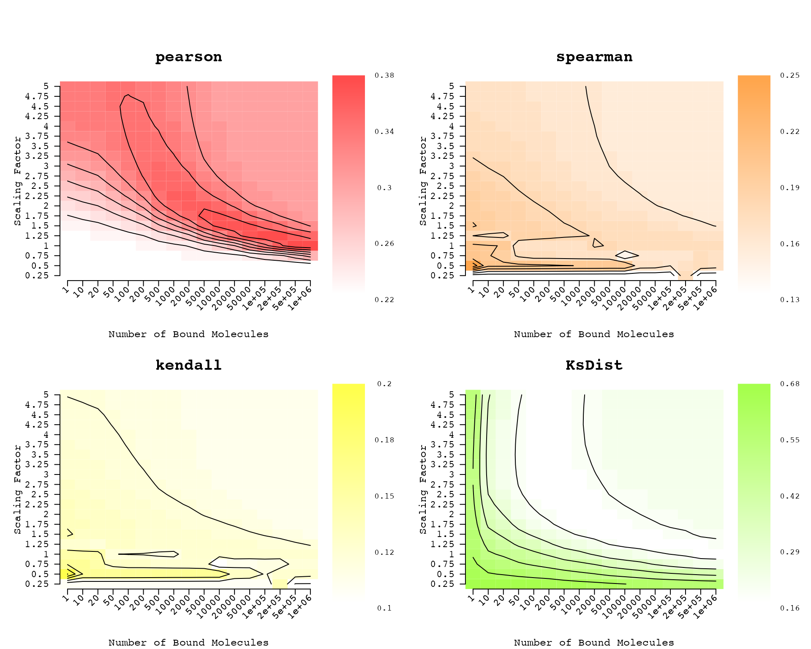
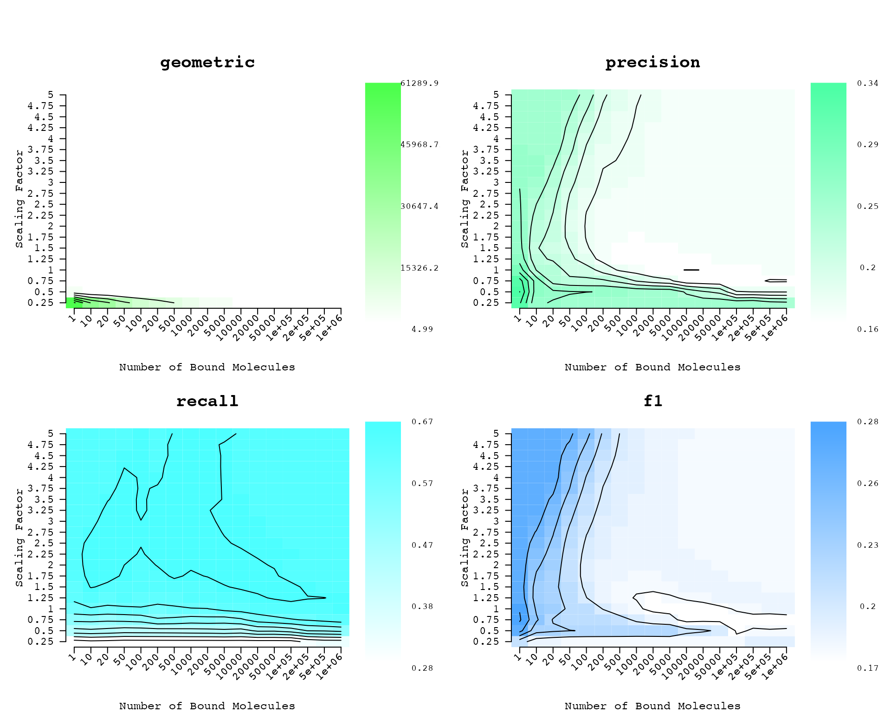
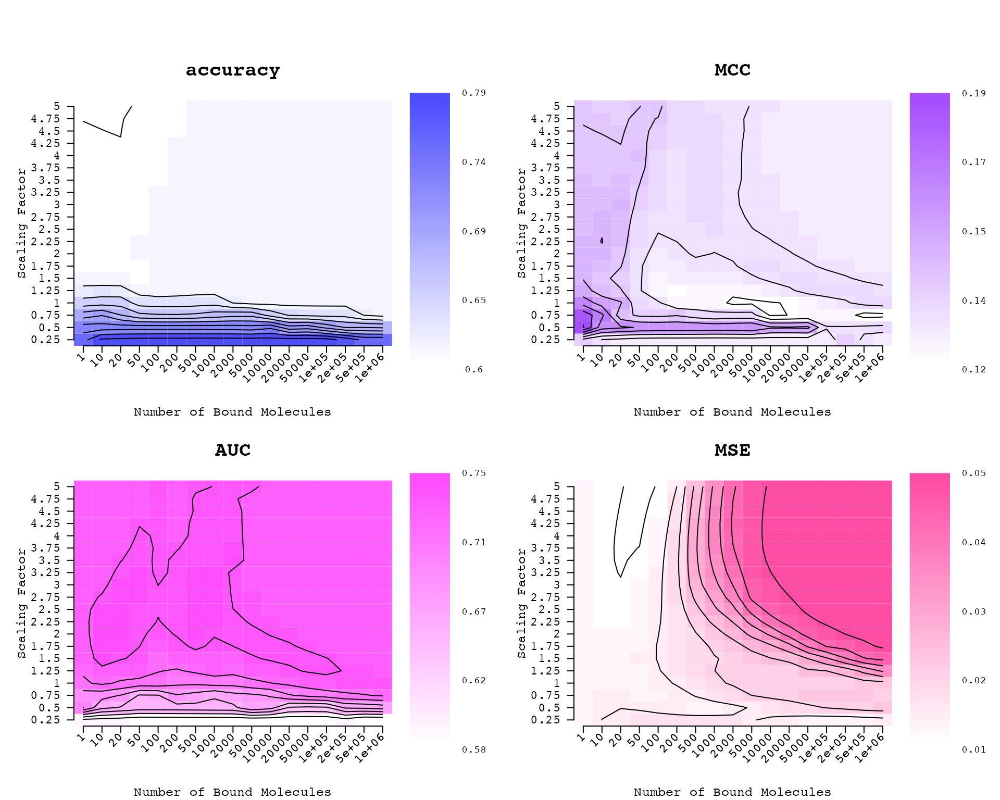
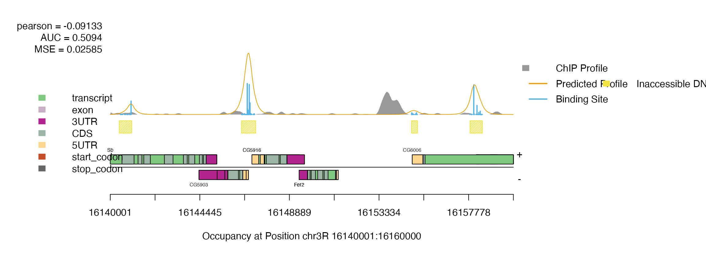
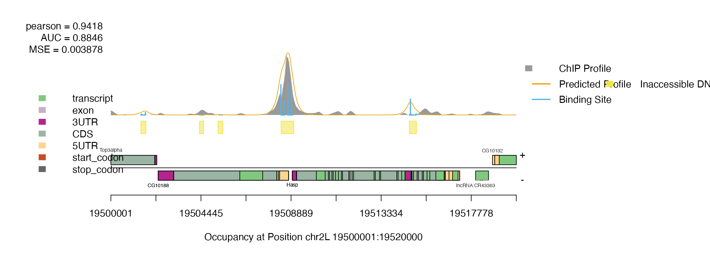
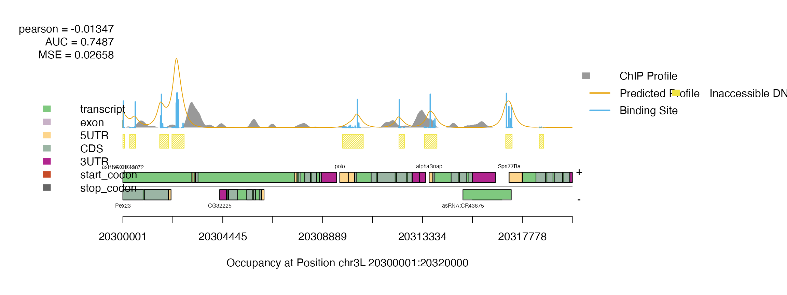
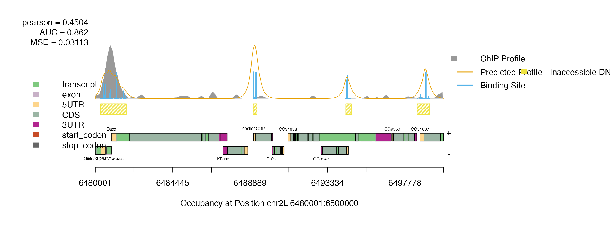

The ChIPanalyser User's Guide
Patrick Martin
ChIPanalyser.RmdIntroduction - What is this package?
ChIPanalyser provides a quick an easy method to predict and explain TF binding. The package uses a statistical thermodynamic framework to model the bidning of proteins to DNA. ChIPanalyser makes the assumption that the probability that any given sites along the genome is bound by a TF can be explained by four main factors: DNA accessibility, Binding energy, a scaling factor modulating binding energy (\(\lambda\)) and number of TF bound (\(N\)) to DNA. Both \(N\) and \(\lambda\) are inferred internally by maximisng (or minimising) a goodness of fit metric between predictions and actual ChIP-data. The package will produce a ChIP like profile at a base pair level. As opposed to machine learning type frameworks, if these paramters are known by other means (experimentally), ChIPanalyser does require any training to produce ChIP like profiles. Estimated values can directly be plugged into the model. Furthermore, ChIPanalyser helps gain an understanding of the mechanims behind TF binding as described by (Zabet et al 2015 & Martin and Zabet 2019).
Methods - The Model
As described above, ChIPAnalyser is based on an approximation of statistical thermodynamics. The core formula describing TF binding is given by : \[P(N,a,\lambda,\omega)_{j} = \frac{N \cdot a_{j} \cdot e^{(\frac{1}{\lambda} \cdot \omega_{j})}}{N \cdot a_{j} \cdot e^{(\frac{1}{\lambda} \cdot \omega_{j})}+ L \cdot n \cdot [a_{i} \cdot e^{(\frac{1} \lambda \cdot \omega_j)}]_ {i}} \] with
- N , the number of TF molecules bound to DNA
- a , DNA accessibility
- \(\lambda\) , a parameter scaling the specificity of a given TF
- \(\omega\) , a Position Weight Matrix.
Work Flow
The next section will be split between the following subsections
- Loading Data - Description of internal Data. We will use this data for our work flow example.
- Quick Start - We will give quick start example. Only core functionalities and work flow will be described in this section.
- Advanced Work - We will describe a more indepth work flow.
- Parameter Description - We will give an in depth description of each parameter used in ChIPAnalyser
Loading Data
Before going through the inner workings of the package and the work
flow, this section will quickly demonstrate how to load example datasets
stored in the package. This data represents a minimal workable examples
for the different functions. All data is derived from real biological
data in Drosophila melanogaster (The Drosophila
melanogaster genome can be found as a BSgenome ).
library(ChIPanalyser)
#Load data
data(ChIPanalyserData)
# Loading DNASequenceSet from BSgenome object
# We recommend using the latest version of the genome
# Please ensure that all your data is aligned to the same version of the genome
library(BSgenome.Dmelanogaster.UCSC.dm6)
DNASequenceSet <- getSeq(BSgenome.Dmelanogaster.UCSC.dm6)
#Loading Position Frequency Matrix
PFM <- file.path(system.file("extdata",package="ChIPanalyser"),"BEAF-32.pfm")
#Checking if correctly loaded
ls()## [1] "Access" "chip" "cs" "DNASequenceSet"
## [5] "geneRef" "PFM" "top"The global environment should now contain a few new variables: DNASequenceSet, PFM, Access, geneRef, top, chip.
DNASequenceSetis DNAStringSet extracted from the Drosophila melanogaster genome (BSgenome). It is advised to use a full genome sequence for this object.PFMis a path to file. In this case, it is a Position Frequency Matrix derived from the Bicoid Transcription factor in Drosophila melanogasterin RAW format. we provide loading support for JASPAR, Transfac and RAW. If you wish to use any other format, we suggest to use the MotifDb package (or load PFM as matrix into R) and parse the matrix to ChIPanalyser. In this scenario,PFMFormatargument should be set to matrix (see below for more information).Accessis aGRangesobject containing accessible DNA for the sequence above.geneRefis aGRangescontaining gene reference annotations.topis aGRangesobject with 4 genomic regions containing BEAF-32 binding.chipis aGRangeswith ChIP score for the BEAF-32 Transcription Factor.
IMPORTANT: Data sets provided in the package have been currated to meet the size requirements for Bioconductor packages. Please read the instruction below carefully as we will describe how to incorportate your own data into the pipe line.
NOTE You can download gene reference from (Genome UCSC website)[https://genome.ucsc.edu/]
Quick Start
Step 1 - Extracting Normalised ChIP scores from ChIP-seq datasets
ChIPAnalyser requires ChIP data in order to infer the optimal set of values that will be assigned to bound Molecules and lambda. The package will maximise (or minimise) a goodness of fit metric between the predictions and ChIP data.
If you have inferred or approximated the values to be assigned to \(N\) and \(\lambda\) by other means, skip this step and go directly to Advanced Work.
chip can be a connection to your ChIP data, a GRanges of
your ChIP or data frame (bed format style) loci is
a GRanges object containing loci of interest. Default set as NULL (see
Advanced Work)
chip <- processingChIP(profile = chip,
loci = top,
cores = 1)
chip## _ _ _ _ _ _ _ _ _ _ _ _ _ _ _ _ _ _ _ _ _ _ _ _ _ _ _ _ _ _ _ _ _ _ _ _ _ _ _ _ _ _ _ _ _ _ _ _ _ _ _ _ _ _ _ _ _ _ _ _
## ChIP score from 4 regions
## _ _ _ _ _ _ _ _ _ _ _ _ _ _ _ _ _ _ _ _ _ _ _ _ _ _ _ _ _ _ _ _ _ _ _ _ _ _ _ _ _ _ _ _ _ _ _ _ _ _ _ _ _ _ _ _ _ _ _ _
## [ 1 ] chr3L:20300001..20320000 [ 2 ] chr2L:6480001..6500000 [ 3 ] chr3R:16140001..16160000 [ 4 ] chr2L:19500001..19520000
## _ _ _ _ _ _ _ _ _ _ _ _ _ _ _ _ _ _ _ _ _ _ _ _ _ _ _ _ _ _ _ _ _ _ _ _ _ _ _ _ _ _ _ _ _ _ _ _ _ _ _ _ _ _ _ _ _ _ _ _
##
## _ _ _ _ _ _ _ _ _ _ _ _ _ _ _ _ _ _ _ _ _ _ _ _ _ _ _ _ _ _ _ _ _ _ _ _ _ _ _ _ _ _ _ _ _ _ _ _ _ _ _ _ _ _ _ _ _ _ _ _
##
## Top 4 regions
## _ _ _ _ _ _ _ _ _ _ _ _ _ _ _ _ _ _ _ _ _ _ _ _ _ _ _ _ _ _ _ _ _ _ _ _ _ _ _ _ _ _ _ _ _ _ _ _ _ _ _ _ _ _ _ _ _ _ _ _
## GRanges object with 4 ranges and 0 metadata columns:
## seqnames ranges strand
## <Rle> <IRanges> <Rle>
## chr3L:20300001..20320000 chr3L 20300001-20320000 *
## chr2L:6480001..6500000 chr2L 6480001-6500000 *
## chr3R:16140001..16160000 chr3R 16140001-16160000 *
## chr2L:19500001..19520000 chr2L 19500001-19520000 *
## -------
## seqinfo: 3 sequences from an unspecified genome; no seqlengths
## _ _ _ _ _ _ _ _ _ _ _ _ _ _ _ _ _ _ _ _ _ _ _ _ _ _ _ _ _ _ _ _ _ _ _ _ _ _ _ _ _ _ _ _ _ _ _ _ _ _ _ _ _ _ _ _ _ _ _ _
##
## _ _ _ _ _ _ _ _ _ _ _ _ _ _ _ _ _ _ _ _ _ _ _ _ _ _ _ _ _ _ _ _ _ _ _ _ _ _ _ _ _ _ _ _ _ _ _ _ _ _ _ _ _ _ _ _ _ _ _ _
##
## Associated Options
## _ _ _ _ _ _ _ _ _ _ _ _ _ _ _ _ _ _ _ _ _ _ _ _ _ _ _ _ _ _ _ _ _ _ _ _ _ _ _ _ _ _ _ _ _ _ _ _ _ _ _ _ _ _ _ _ _ _ _ _
## backgroundSignal: 0.0354659475382993
## maxSignal: 1
## chipMean: 200
## chipSd: 200
## chipSmooth: 250
## lociWidth: 20000
## _ _ _ _ _ _ _ _ _ _ _ _ _ _ _ _ _ _ _ _ _ _ _ _ _ _ _ _ _ _ _ _ _ _ _ _ _ _ _ _ _ _ _ _ _ _ _ _ _ _ _ _ _ _ _ _ _ _ _ _The output of processingChIP returns a
ChIPScore object containing extracted and normalised ChIP
scores, your loci of interest and internal parameters associated to the
ChIP extractions process.
Step 2 - Computing a PWMs
The model relies on a Postion Weight Matrix.
genomicProfiles serve as a way of storing important
paramters. More importantly, this object stores intermediate results as
you make your way through the analysis pipeline.
From a Position Frequency Matrix:
# PFMs are automatically converted to PWM when build genomicProfiles
GP <- genomicProfiles(PFM = PFM, PFMFormat = "JASPAR")
GP## _ _ _ _ _ _ _ _ _ _ _ _ _ _ _ _ _ _ _ _ _ _ _ _ _ _ _ _ _ _ _ _ _ _ _ _ _ _ _ _ _ _ _ _ _ _ _ _ _ _ _ _ _ _ _ _ _ _ _ _
##
## genomicProfiles object: Position Weight Matrix
## _ _ _ _ _ _ _ _ _ _ _ _ _ _ _ _ _ _ _ _ _ _ _ _ _ _ _ _ _ _ _ _ _ _ _ _ _ _ _ _ _ _ _ _ _ _ _ _ _ _ _ _ _ _ _ _ _ _ _ _
##
## Position Weight Matrix (PWM):
##
## [,1] [,2] [,3] [,4] [,5] [,6]
## A -0.2891885 -0.03809741 0.2316372 0.6301128 0.687738702 0.79025750
## C -0.1331731 0.36623770 -0.1622533 0.3097032 -1.062881002 -1.12273432
## G 0.1277129 -0.16225333 0.2729606 -0.2758771 -0.395107494 0.01666913
## T 0.2147795 -0.29456303 -0.5529272 -8.2905435 -0.008313437 -0.79001402
## [,7] [,8] [,9] [,10] [,11] [,12] [,13]
## A 0.4399853 -0.2905294 1.366596 -8.290544 -8.290544 -2.557202 1.2881138
## C 0.6139508 -0.4502305 -8.290544 -8.290544 1.386106 -8.290544 -8.2905435
## G -0.5119134 -8.2905435 -2.557202 -8.290544 -8.290544 1.366596 -0.9846835
## T -8.2905435 0.9610348 -8.290544 1.386106 -8.290544 -8.290544 -8.2905435
## [,14] [,15]
## A -0.844542 0.77465549
## C -1.766981 -8.29054350
## G -8.290544 -0.23443384
## T 1.223525 0.03814908
## _ _ _ _ _ _ _ _ _ _ _ _ _ _ _ _ _ _ _ _ _ _ _ _ _ _ _ _ _ _ _ _ _ _ _ _ _ _ _ _ _ _ _ _ _ _ _ _ _ _ _ _ _ _ _ _ _ _ _ _
##
## Base pairs frequency for PWM weighting :
##
## A C G T
## 0.25 0.25 0.25 0.25
## _ _ _ _ _ _ _ _ _ _ _ _ _ _ _ _ _ _ _ _ _ _ _ _ _ _ _ _ _ _ _ _ _ _ _ _ _ _ _ _ _ _ _ _ _ _ _ _ _ _ _ _ _ _ _ _ _ _ _ _
##
## PWM built from (PFM - Format JASPAR ) :
##
## [,1] [,2] [,3] [,4] [,5] [,6] [,7] [,8] [,9] [,10] [,11] [,12] [,13] [,14]
## A 746 959 1256 1871 1982 2196 1547 745 3908 0 0 77 3613 428
## C 872 1437 847 1358 344 324 1841 635 0 0 3985 0 0 170
## G 1132 847 1309 756 671 1013 597 0 77 0 0 3908 372 0
## T 1235 742 573 0 988 452 0 2605 0 3985 0 0 0 3387
## [,15]
## A 2162
## C 0
## G 788
## T 1035
##
## _ _ _ _ _ _ _ _ _ _ _ _ _ _ _ _ _ _ _ _ _ _ _ _ _ _ _ _ _ _ _ _ _ _ _ _ _ _ _ _ _ _ _ _ _ _ _ _ _ _ _ _ _ _ _ _ _ _ _ _From a Position Weight Matrix:
GP <- genomicProfiles(PWM=PositionWeightMatrix)Step 3 - Computing Optimal Parameters
As described above, ChIPanalyser infers the optimal combination of
bound molecules and lambda that will maximise (or minimise) a goodness
of fit metric. The following function computes the optimal set of
parameters and returns intermediate steps of the analysis pipeline. To
do so, we will be parsing the follwing: a DNA sequence, a Position
Weight Matrix (contained in a genomicProfiles), chromatin States
(Accessible DNA - This is optional), and extracted/normalised
experimental ChIP score (result of the processingChIP
function).
## surpress dependency warnings
optimal <- suppressWarnings(computeOptimal(genomicProfiles = GP,
DNASequenceSet = DNASequenceSet,
ChIPScore = chip,
chromatinState = Access))## Computing Genome Wide PWM Score## Computing PWM Score at Loci & Extracting Sites Above Threshold## Computing Occupancy## Computing ChIP-seq-like Profile## Computing Accuracy of ProfileNOTE Default Optimal parameters are provided internally as the following:
## Lambda Values
seq(0.25,5,by=0.25)## [1] 0.25 0.50 0.75 1.00 1.25 1.50 1.75 2.00 2.25 2.50 2.75 3.00 3.25 3.50 3.75
## [16] 4.00 4.25 4.50 4.75 5.00
## Bound Molecule Values
c(1, 10, 20, 50, 100,
200, 500,1000,2000, 5000,10000,20000,50000, 100000,
200000, 500000, 1000000)## [1] 1e+00 1e+01 2e+01 5e+01 1e+02 2e+02 5e+02 1e+03 2e+03 5e+03 1e+04 2e+04
## [13] 5e+04 1e+05 2e+05 5e+05 1e+06NOTE To change these parameters see Advanced Work
Step 4 - Extracting Optimal Paramters (Prelim)
Once computed, we will extract the optimal set of parameters.
optimalParam <- optimal$Optimal
optimalParam$OptimalParameters## $pearson
## lambda boundMolecules
## 1e+00 1e+06
##
## $spearman
## lambda boundMolecules
## 0.5 1.0
##
## $kendall
## lambda boundMolecules
## 0.5 1.0
##
## $KsDist
## lambda boundMolecules
## 4.75 200.00
##
## $geometric
## lambda boundMolecules
## 5 100
##
## $precision
## lambda boundMolecules
## 0.5 1.0
##
## $recall
## lambda boundMolecules
## 2.5 1000.0
##
## $f1
## lambda boundMolecules
## 0.75 1.00
##
## $accuracy
## lambda boundMolecules
## 0.25 2000.00
##
## $MCC
## lambda boundMolecules
## 0.5 1.0
##
## $AUC
## lambda boundMolecules
## 2 10
##
## $MSE
## lambda boundMolecules
## 5 50We can see the opitmal set of parameters suggested by ChIPanalyser.
Step 5 - Plotting Optimal Set of Parameters
Despite ChIPanalyser returning suggested optimal parameters, you may wish to visualise the optimal parameters for each paramter combination and choose your own set of parameters. To this effect, we have implemented an Optimal parameter plotting fucntion.
# Plotting Optimal heat maps
par(oma=c(0,0,3,0))
layout(matrix(1:8,ncol=4, byrow=T),width=c(6,1.5,6,1.5),height=c(1,1))
plotOptimalHeatMaps(optimalParam,layout=FALSE)
Step 6 - Extracting Optimal Set of Parameters with associated data
Once satisfied with your choice of optimal parameters, you can extracted the data associated to those parameters. You can select more that one parameter however the values assigned to each argument must be one of the values used for computing the optimal set of parameters.
optimalParam <- searchSites(optimal,lambdaPWM = 1.25,BoundMolecules = 10000)Step 7 - Plotting ChIP_seq like profiles
The final step is to plot the computed predicted profiles. We provide a plotting function to produce predicted profile plots.
plotOccupancyProfile(predictedProfile = optimalParam$ChIPProfiles,
ChIPScore = chip,
chromatinState = Access,
occupancy = optimalParam$Occupancy,
goodnessOfFit = optimalParam$goodnessOfFit,
geneRef = geneRef)
Advanced Work
In this section we will describe a more in depth work flow. This will include parameter tweakin, annexe functions and some insights into the outputs of each functions.
Step 1 - Parameter Set Up
Some parameters can be changed between each step of the pipeline. These parameters will enable you to tweak and improve the quality of your analysis.
There are many parameters to choose from. These parameters already have default value assigned to them.
## Suggested Parameters to start with.
parameterOptions()## _ _ _ _ _ _ _ _ _ _ _ _ _ _ _ _ _ _ _ _ _ _ _ _ _ _ _ _ _ _ _ _ _ _ _ _ _ _ _ _ _ _ _ _ _ _ _ _ _ _ _ _ _ _ _ _ _ _ _ _
## parameterOptions
## _ _ _ _ _ _ _ _ _ _ _ _ _ _ _ _ _ _ _ _ _ _ _ _ _ _ _ _ _ _ _ _ _ _ _ _ _ _ _ _ _ _ _ _ _ _ _ _ _ _ _ _ _ _ _ _ _ _ _ _
## processingChIP options
##
## chipMean: 200
## chipSd: 200
## chipSmooth: 250
## lociWidth: 20000
## noiseFilter: zero
##
## _ _ _ _ _ _ _ _ _ _ _ _ _ _ _ _ _ _ _ _ _ _ _ _ _ _ _ _ _ _ _ _ _ _ _ _ _ _ _ _ _ _ _ _ _ _ _ _ _ _ _ _ _ _ _ _ _ _ _ _
## processingChIP options Updated
##
## maxSignal: 1
## backgroundSignal: 0
##
## _ _ _ _ _ _ _ _ _ _ _ _ _ _ _ _ _ _ _ _ _ _ _ _ _ _ _ _ _ _ _ _ _ _ _ _ _ _ _ _ _ _ _ _ _ _ _ _ _ _ _ _ _ _ _ _ _ _ _ _
## Position Weight Matrix Options
##
## naturalLog: TRUE
## noOfSites: all
## PWMpseudocount: 1
##
## _ _ _ _ _ _ _ _ _ _ _ _ _ _ _ _ _ _ _ _ _ _ _ _ _ _ _ _ _ _ _ _ _ _ _ _ _ _ _ _ _ _ _ _ _ _ _ _ _ _ _ _ _ _ _ _ _ _ _ _
## Genome Wide Score options
##
## strandRule: max
## whichstrand: +-
## lambdaPWM: 1
##
## _ _ _ _ _ _ _ _ _ _ _ _ _ _ _ _ _ _ _ _ _ _ _ _ _ _ _ _ _ _ _ _ _ _ _ _ _ _ _ _ _ _ _ _ _ _ _ _ _ _ _ _ _ _ _ _ _ _ _ _
## PWM Scores above Threshold options
##
## strandRule: max
## whichstrand: +-
##
## _ _ _ _ _ _ _ _ _ _ _ _ _ _ _ _ _ _ _ _ _ _ _ _ _ _ _ _ _ _ _ _ _ _ _ _ _ _ _ _ _ _ _ _ _ _ _ _ _ _ _ _ _ _ _ _ _ _ _ _
## Occupancy options
##
## Ploidy: 2
## lambdaPWM: 1
## boundMolecules: 1000
## maxSignal: 1
## backgroundSignal: 0
##
## _ _ _ _ _ _ _ _ _ _ _ _ _ _ _ _ _ _ _ _ _ _ _ _ _ _ _ _ _ _ _ _ _ _ _ _ _ _ _ _ _ _ _ _ _ _ _ _ _ _ _ _ _ _ _ _ _ _ _ _
## ChIP Profile options
##
## chipMean: 200
## chipSd: 200
## chipSmooth: 250
## stepSize: 10
##
## _ _ _ _ _ _ _ _ _ _ _ _ _ _ _ _ _ _ _ _ _ _ _ _ _ _ _ _ _ _ _ _ _ _ _ _ _ _ _ _ _ _ _ _ _ _ _ _ _ _ _ _ _ _ _ _ _ _ _ _
## Changing parameters
PO <- parameterOptions(noiseFilter="sigmoid",chipSd=150,chipMean=150,lociWidth=30000)NOTE If you wish to do so, you can change all your parameters at this step. These parameters will be parsed through the different steps of the pipeline as long as you parse this object to each step of the analysis.
Step 2 - Extracting Normalised ChIP scores.
In some case you will not have a pre-determined idea of which loci
you wish to look at. The processingChIP function offers a
few possibilities to work around this issue.
## Top 50 loci based on ChIP score
processingChIP(profile = "/path/to/ChIP",
loci = NULL,
reduce = 50,
parameterOptions = PO)
## Top 50 loci ALSO containing peaks
processingChIP(profile = "/path/to/ChIP",
loci = NULL,
reduce = 50,
peaks = "/path/to/peaks",
parameterOptions=PO)
## Top 50 loci containing BOTH peaks and Accessible DNA
processingChIP(profile = "/path/to/ChIP",
loci = NULL,
reduce = 50,
peaks = "/path/to/peaks",
chromatinState = "/path/to/chromatinState",
parameterOptions = PO)Loci will be computed internally based on the ChIP score provided.
ChIP Scores will be tilled into bins of width equals to the value
assigned to the lociWidth argument in the
parameterOptions object (see above). The default loci width
is set at 20 kbp. Top regions are selected based on ordered ChIP
scores.
Most genomic formats are supported by ChIPanalyser (wig, bed, bedGraph, bigWig, bigBed). The “path/to/file” may also be a GRanges object.
processingChIP function returns extracted/Normalised
ChIP scores (list of numeric vectors), the loci of inetrest (GRanges),
and associated paramters that have been extracted (such as maxSignal and
backgroundSignal). The loci are the top n regions as selected
by the reduce argument. Using the loci() accessor applied
on a ChIPScore object will return a GRanges of selected loci. The
scores() accessors applied on a ChIPScore
object will return the normalised scores associated to each Locus.
NOTE This function also supports multi core computing.
Step 3 - Position Weight Matrix and Associated Paramters
Computing the PWM from PFMs can be tweaked by using some additional
parameters. PWMs depend on Base Pair Frequency in the genome of
interest. Either you can provide a vector containing the base pair
frequency (A C T G in order) or the genomicProfiles object
will compute it internally if you provide a BSgenome/DNAStringSet.
## Formal class 'genomicProfiles' [package "ChIPanalyser"] with 31 slots
## ..@ PWM : num[0 , 0 ]
## ..@ PFM : num[0 , 0 ]
## ..@ PFMFormat : chr "raw"
## ..@ BPFrequency : num [1:4] 0.25 0.25 0.25 0.25
## ..@ minPWMScore : logi(0)
## ..@ maxPWMScore : logi(0)
## ..@ profiles :Formal class 'CompressedGRangesList' [package "GenomicRanges"] with 5 slots
## .. .. ..@ unlistData :Formal class 'GRanges' [package "GenomicRanges"] with 7 slots
## .. .. .. .. ..@ seqnames :Formal class 'Rle' [package "S4Vectors"] with 4 slots
## .. .. .. .. .. .. ..@ values : Factor w/ 0 levels:
## .. .. .. .. .. .. ..@ lengths : int(0)
## .. .. .. .. .. .. ..@ elementMetadata: NULL
## .. .. .. .. .. .. ..@ metadata : list()
## .. .. .. .. ..@ ranges :Formal class 'IRanges' [package "IRanges"] with 6 slots
## .. .. .. .. .. .. ..@ start : int(0)
## .. .. .. .. .. .. ..@ width : int(0)
## .. .. .. .. .. .. ..@ NAMES : NULL
## .. .. .. .. .. .. ..@ elementType : chr "ANY"
## .. .. .. .. .. .. ..@ elementMetadata: NULL
## .. .. .. .. .. .. ..@ metadata : list()
## .. .. .. .. ..@ strand :Formal class 'Rle' [package "S4Vectors"] with 4 slots
## .. .. .. .. .. .. ..@ values : Factor w/ 3 levels "+","-","*":
## .. .. .. .. .. .. ..@ lengths : int(0)
## .. .. .. .. .. .. ..@ elementMetadata: NULL
## .. .. .. .. .. .. ..@ metadata : list()
## .. .. .. .. ..@ seqinfo :Formal class 'Seqinfo' [package "GenomeInfoDb"] with 4 slots
## .. .. .. .. .. .. ..@ seqnames : chr(0)
## .. .. .. .. .. .. ..@ seqlengths : int(0)
## .. .. .. .. .. .. ..@ is_circular: logi(0)
## .. .. .. .. .. .. ..@ genome : chr(0)
## .. .. .. .. ..@ elementMetadata:Formal class 'DFrame' [package "S4Vectors"] with 6 slots
## .. .. .. .. .. .. ..@ rownames : NULL
## .. .. .. .. .. .. ..@ nrows : int 0
## .. .. .. .. .. .. ..@ elementType : chr "ANY"
## .. .. .. .. .. .. ..@ elementMetadata: NULL
## .. .. .. .. .. .. ..@ metadata : list()
## .. .. .. .. .. .. ..@ listData : Named list()
## .. .. .. .. ..@ elementType : chr "ANY"
## .. .. .. .. ..@ metadata : list()
## .. .. ..@ elementMetadata:Formal class 'DFrame' [package "S4Vectors"] with 6 slots
## .. .. .. .. ..@ rownames : NULL
## .. .. .. .. ..@ nrows : int 0
## .. .. .. .. ..@ elementType : chr "ANY"
## .. .. .. .. ..@ elementMetadata: NULL
## .. .. .. .. ..@ metadata : list()
## .. .. .. .. ..@ listData : Named list()
## .. .. ..@ elementType : chr "GRanges"
## .. .. ..@ metadata : list()
## .. .. ..@ partitioning :Formal class 'PartitioningByEnd' [package "IRanges"] with 5 slots
## .. .. .. .. ..@ end : int(0)
## .. .. .. .. ..@ NAMES : NULL
## .. .. .. .. ..@ elementType : chr "ANY"
## .. .. .. .. ..@ elementMetadata: NULL
## .. .. .. .. ..@ metadata : list()
## ..@ DNASequenceLength : logi(0)
## ..@ averageExpPWMScore: logi(0)
## ..@ ZeroBackground : logi(0)
## ..@ drop : logi(0)
## ..@ tags : chr "empty"
## ..@ ploidy : num 2
## ..@ boundMolecules : num 1000
## ..@ backgroundSignal : num 0
## ..@ maxSignal : num 1
## ..@ lociWidth : num 20000
## ..@ chipMean : num 200
## ..@ chipSd : num 200
## ..@ chipSmooth : num 250
## ..@ stepSize : num 10
## ..@ removeBackground : num 0
## ..@ noiseFilter : chr "zero"
## ..@ PWMThreshold : num 0.7
## ..@ strandRule : chr "max"
## ..@ whichstrand : chr "+-"
## ..@ lambdaPWM : num 1
## ..@ naturalLog : logi TRUE
## ..@ noOfSites : chr "all"
## ..@ PWMpseudocount : num 1
## ..@ paramTag : chr "empty"
GP <- genomicProfiles(PFM=PFM, PFMFormat="JASPAR", BPFrequency=DNASequenceSet)
GP## _ _ _ _ _ _ _ _ _ _ _ _ _ _ _ _ _ _ _ _ _ _ _ _ _ _ _ _ _ _ _ _ _ _ _ _ _ _ _ _ _ _ _ _ _ _ _ _ _ _ _ _ _ _ _ _ _ _ _ _
##
## genomicProfiles object: Position Weight Matrix
## _ _ _ _ _ _ _ _ _ _ _ _ _ _ _ _ _ _ _ _ _ _ _ _ _ _ _ _ _ _ _ _ _ _ _ _ _ _ _ _ _ _ _ _ _ _ _ _ _ _ _ _ _ _ _ _ _ _ _ _
##
## Position Weight Matrix (PWM):
##
## [,1] [,2] [,3] [,4] [,5] [,6]
## A -0.43767288 -0.18659373 0.08313105 0.4815961 0.5392208 0.6417377
## C 0.04045561 0.53988434 0.01137399 0.4833483 -0.8893224 -0.9491829
## G 0.30241584 0.01243766 0.44766827 -0.1011918 -0.2204289 0.1913679
## T 0.06672312 -0.44259797 -0.70094631 -8.2905435 -0.1563618 -0.9380145
## [,7] [,8] [,9] [,10] [,11] [,12] [,13]
## A 0.2914731 -0.4390137 1.218068 -8.290544 -8.290544 -2.705222 1.1395868
## C 0.7876035 -0.2766189 -8.290544 -8.290544 1.559771 -8.290544 -8.2905435
## G -0.3372422 -8.2905435 -2.382983 -8.290544 -8.290544 1.541324 -0.8100529
## T -8.2905435 0.8129614 -8.290544 1.238027 -8.290544 -8.290544 -8.2905435
## [,14] [,15]
## A -0.9929866 0.6261359
## C -1.5935410 -8.2905435
## G -8.2905435 -0.0597464
## T 1.0754476 -0.1099011
## _ _ _ _ _ _ _ _ _ _ _ _ _ _ _ _ _ _ _ _ _ _ _ _ _ _ _ _ _ _ _ _ _ _ _ _ _ _ _ _ _ _ _ _ _ _ _ _ _ _ _ _ _ _ _ _ _ _ _ _
##
## Base pairs frequency for PWM weighting :
##
## A C G T
## 0.2900342 0.2101426 0.2099192 0.2899039
## _ _ _ _ _ _ _ _ _ _ _ _ _ _ _ _ _ _ _ _ _ _ _ _ _ _ _ _ _ _ _ _ _ _ _ _ _ _ _ _ _ _ _ _ _ _ _ _ _ _ _ _ _ _ _ _ _ _ _ _
##
## PWM built from (PFM - Format JASPAR ) :
##
## [,1] [,2] [,3] [,4] [,5] [,6] [,7] [,8] [,9] [,10] [,11] [,12] [,13] [,14]
## A 746 959 1256 1871 1982 2196 1547 745 3908 0 0 77 3613 428
## C 872 1437 847 1358 344 324 1841 635 0 0 3985 0 0 170
## G 1132 847 1309 756 671 1013 597 0 77 0 0 3908 372 0
## T 1235 742 573 0 988 452 0 2605 0 3985 0 0 0 3387
## [,15]
## A 2162
## C 0
## G 788
## T 1035
##
## _ _ _ _ _ _ _ _ _ _ _ _ _ _ _ _ _ _ _ _ _ _ _ _ _ _ _ _ _ _ _ _ _ _ _ _ _ _ _ _ _ _ _ _ _ _ _ _ _ _ _ _ _ _ _ _ _ _ _ _The genomicProfiles object also contains all parameters
described in parameterOptions. This makes the parsing of
parameters straight forward between each step of the analysis pipeline.
The genomicProfiles object will be updated internally as
you provided More parameters. This object will also be the main object
that you will parse through each step of the analysis. There are a few
different ways to add new paramters:
## Parsing pre computed parameters (processingChIP function)
GP <- genomicProfiles(PFM = PFM,
PFMFormat = "JASPAR",
BPFrequency = DNASequenceSet,
ChIPScore = ChIPScore)
## Parsing pre assigned function (parameterOptions)
parameterOptions <- parameterOptions(lambdaPWM = c(1,2,3),
boundMolecules = c(5,50,500))
GP <- genomicProfiles(PFM = PFM,
PFMFormat = "JASPAR",
BPFrequency = DNASequenceSet,
parameterOptions = parameterOptions)
## Direct parameter assignement
GP <- genomicProfiles(PFM = PFM,
PFMFormat = "JASPAR",
BPFrequency = DNASequenceSet,
lambdaPWM = c(1,2,3),
boundMolecules = c(4,500,8000))NOTE parameterOptions object can be parsed to any
function of the analysis pipeline if parameters need to be changed along
the way.
Step 4 - Computing Optimal Set of Parameters
The optimal set of parameters can be computed on custom set of values
for \(N\) and \(\lambda\). As described above, there a few
ways to modify parameter Options. If you were to assign more than two
values to both of these slots, these new values will be used as “Optimal
Parameters Combinations”. NOTE parameterOptions is
inherited by genomicProfiles hence why you can also assign
those paramters to the genomicProfiles contructor.
The computeOptimal function offers a few more options
that we will briefly describe here.
## Setting custom parameters
OP <- parameterOptions(lambdaPWM = seq(1,10,by=0.5),
boundMolecules = seq(1,100000, length.out=20))
## Computing ONLY Optimal Parameters and MSE as goodness Of Fit metric
optimal <- computeOptimal(genomicProfiles = GP,
DNASequenceSet = DNASequenceSet,
ChIPScore = chip,
chromatinState = Access,
parameterOptions = OP,
optimalMethod = "MSE",
returnAll = FALSE)
### Computing ONLY Optimal Parameters and using Rank slection method
optimal <- computeOptimal(genomicProfiles = GP,
DNASequenceSet = DNASequenceSet,
ChIPScore = chip,
chromatinState = Access,
parameterOptions = OP,
optimalMethod = "all",
rank=TRUE)When the returnAll argument is set to FALSE,
only the optimal parameters Will be return. No internal Data will be
returned.
Optimal Parameters are determined by selecting the best perfomring
combination of paremeters. The goodness of fit score for each
combination is averaged over all regions considered. When the
rank argument is set to TRUE, the optimal
parameters will be based on which combination of parameters showed the
best performance for each regions individually. Parameter combinations
are ranked based on how many individual regions performed best with that
specific set of parameters.
Finally, optimalMethod argument will enbale you to
selected the goodness Of Fit method you wish to use.
Step 5 - Extracting and Plotting Optimal Parameters
Now that you have selected custom parameters, you will want to plot the associated heat maps.
## Extracted Optimal Parameters
optimalParam <- optimal$Optimal
## Plotting heat maps
plotOptimalHeatMaps(optimalParam,overlay=TRUE)It is possible to plot an overlay of the optimal set of paramters of
all goodness Of Fit methods. Using the overlay argument in
the plotting function will plot overlay the top 10% of optimal
parameters as selected by each Goodness of fit metric.
Step 6 - Computing individual parameter combinations
Let’s imagine that when looking at the optimal parameter heat maps, you would like to run a combination of parameters that is not in the ones that had been provided but you do not want to re-compute optimal parameters. Or Let us imagine that you have already an estimate of number of bound molecules. ChIPanalyser provides functions that will enable you to run the piple line on individual parameter combinations. The steps are described as following:
## Creating genomic Profiles object with PFMs and associated parameters
GP <- genomicProfiles(PFM = PFM,
PFMFormat = "JASPAR",
BPFrequency = DNASequenceSet,
lambdaPWM = 1,
boundMolecules = 58794)
## Computing Genome Wide Score required
GW <- computeGenomeWideScores(genomicProfiles = GP,
DNASequenceSet = DNASequenceSet,
chromatinState = Access)## Extracting genome wide scores## Considering Chromatin State ~ Both strands## Computing Mean waiting time
GW## _ _ _ _ _ _ _ _ _ _ _ _ _ _ _ _ _ _ _ _ _ _ _ _ _ _ _ _ _ _ _ _ _ _ _ _ _ _ _ _ _ _ _ _ _ _ _ _ _ _ _ _ _ _ _ _ _ _ _ _
##
## genomicProfiles object: Accessible Chromatin Score
## _ _ _ _ _ _ _ _ _ _ _ _ _ _ _ _ _ _ _ _ _ _ _ _ _ _ _ _ _ _ _ _ _ _ _ _ _ _ _ _ _ _ _ _ _ _ _ _ _ _ _ _ _ _ _ _ _ _ _ _
##
## Position Weight Matrix (PWM):
##
## [,1] [,2] [,3] [,4] [,5] [,6]
## A -0.43767288 -0.18659373 0.08313105 0.4815961 0.5392208 0.6417377
## C 0.04045561 0.53988434 0.01137399 0.4833483 -0.8893224 -0.9491829
## G 0.30241584 0.01243766 0.44766827 -0.1011918 -0.2204289 0.1913679
## T 0.06672312 -0.44259797 -0.70094631 -8.2905435 -0.1563618 -0.9380145
## [,7] [,8] [,9] [,10] [,11] [,12] [,13]
## A 0.2914731 -0.4390137 1.218068 -8.290544 -8.290544 -2.705222 1.1395868
## C 0.7876035 -0.2766189 -8.290544 -8.290544 1.559771 -8.290544 -8.2905435
## G -0.3372422 -8.2905435 -2.382983 -8.290544 -8.290544 1.541324 -0.8100529
## T -8.2905435 0.8129614 -8.290544 1.238027 -8.290544 -8.290544 -8.2905435
## [,14] [,15]
## A -0.9929866 0.6261359
## C -1.5935410 -8.2905435
## G -8.2905435 -0.0597464
## T 1.0754476 -0.1099011
## _ _ _ _ _ _ _ _ _ _ _ _ _ _ _ _ _ _ _ _ _ _ _ _ _ _ _ _ _ _ _ _ _ _ _ _ _ _ _ _ _ _ _ _ _ _ _ _ _ _ _ _ _ _ _ _ _ _ _ _
##
## maxPWMScore: 11.1310200679306
## minPWMScore: -59.5942907981563
## averageExpPWMScore: 8.29141420231848 (lambda = 1)
## DNASequenceLength: 10471
## _ _ _ _ _ _ _ _ _ _ _ _ _ _ _ _ _ _ _ _ _ _ _ _ _ _ _ _ _ _ _ _ _ _ _ _ _ _ _ _ _ _ _ _ _ _ _ _ _ _ _ _ _ _ _ _ _ _ _ _
##
## Computing PWM score above threshold
pwm <- computePWMScore(genomicProfiles = GW,
DNASequenceSet = DNASequenceSet,
loci = chip,
chromatinState = Access)## PWM Scores Extraction
pwm## _ _ _ _ _ _ _ _ _ _ _ _ _ _ _ _ _ _ _ _ _ _ _ _ _ _ _ _ _ _ _ _ _ _ _ _ _ _ _ _ _ _ _ _ _ _ _ _ _ _ _ _ _ _ _ _ _ _ _ _
##
## genomicProfiles object: PWM scores above Threshold
## _ _ _ _ _ _ _ _ _ _ _ _ _ _ _ _ _ _ _ _ _ _ _ _ _ _ _ _ _ _ _ _ _ _ _ _ _ _ _ _ _ _ _ _ _ _ _ _ _ _ _ _ _ _ _ _ _ _ _ _
##
## Scores above Threshold in locus:
## GRanges object with 169 ranges and 2 metadata columns:
## seqnames ranges strand | PWMScore
## <Rle> <IRanges> <Rle> | <numeric>
## chr3L:20300001..20320000 chr3L 20300005-20300019 - | -0.260743
## chr3L:20300001..20320000 chr3L 20300015-20300029 + | -3.581791
## chr3L:20300001..20320000 chr3L 20300022-20300036 - | 2.266402
## chr3L:20300001..20320000 chr3L 20300066-20300080 + | -7.941449
## chr3L:20300001..20320000 chr3L 20300293-20300307 + | -6.443234
## ... ... ... ... . ...
## chr3L:20300001..20320000 chr3L 20318607-20318621 - | -9.10951
## chr3L:20300001..20320000 chr3L 20318620-20318634 + | -3.39948
## chr3L:20300001..20320000 chr3L 20318676-20318690 - | -10.03808
## chr3L:20300001..20320000 chr3L 20318724-20318738 + | -7.80125
## chr3L:20300001..20320000 chr3L 20318728-20318742 + | -6.63695
## DNAaffinity
## <numeric>
## chr3L:20300001..20320000 1
## chr3L:20300001..20320000 1
## chr3L:20300001..20320000 1
## chr3L:20300001..20320000 1
## chr3L:20300001..20320000 1
## ... ...
## chr3L:20300001..20320000 1
## chr3L:20300001..20320000 1
## chr3L:20300001..20320000 1
## chr3L:20300001..20320000 1
## chr3L:20300001..20320000 1
## -------
## seqinfo: 1 sequence from an unspecified genome; no seqlengths
##
## 3 remaining loci
## Locus: chr2L:6480001..6500000 (length = 150)
## Locus: chr3R:16140001..16160000 (length = 121)
## Locus: chr2L:19500001..19520000 (length = 79)
## _ _ _ _ _ _ _ _ _ _ _ _ _ _ _ _ _ _ _ _ _ _ _ _ _ _ _ _ _ _ _ _ _ _ _ _ _ _ _ _ _ _ _ _ _ _ _ _ _ _ _ _ _ _ _ _ _ _ _ _
##
## Associated parameters
## _ _ _ _ _ _ _ _ _ _ _ _ _ _ _ _ _ _ _ _ _ _ _ _ _ _ _ _ _ _ _ _ _ _ _ _ _ _ _ _ _ _ _ _ _ _ _ _ _ _ _ _ _ _ _ _ _ _ _ _
##
## minPWMScore: -59.5942907981563
## maxPWMScore: 11.1310200679306
## lambdaPWM: 1
## PWMThreshold: 0.7
## Computing Occupancy of sites above threshold
occup <- computeOccupancy(genomicProfiles = pwm)## Computing Occupancy at sites higher than threshold.
occup## _ _ _ _ _ _ _ _ _ _ _ _ _ _ _ _ _ _ _ _ _ _ _ _ _ _ _ _ _ _ _ _ _ _ _ _ _ _ _ _ _ _ _ _ _ _ _ _ _ _ _ _ _ _ _ _ _ _ _ _
##
## genomicProfiles object: Occupancy at sites above Threshold
## _ _ _ _ _ _ _ _ _ _ _ _ _ _ _ _ _ _ _ _ _ _ _ _ _ _ _ _ _ _ _ _ _ _ _ _ _ _ _ _ _ _ _ _ _ _ _ _ _ _ _ _ _ _ _ _ _ _ _ _
##
## Parameter combination: lambda = 1 & boundMolecules = 58794
##
## $`lambda = 1 & boundMolecules = 58794`
## GRangesList object of length 4:
## $`chr3L:20300001..20320000`
## GRanges object with 169 ranges and 3 metadata columns:
## seqnames ranges strand | PWMScore
## <Rle> <IRanges> <Rle> | <numeric>
## chr3L:20300001..20320000 chr3L 20300005-20300019 - | -0.260743
## chr3L:20300001..20320000 chr3L 20300015-20300029 + | -3.581791
## chr3L:20300001..20320000 chr3L 20300022-20300036 - | 2.266402
## chr3L:20300001..20320000 chr3L 20300066-20300080 + | -7.941449
## chr3L:20300001..20320000 chr3L 20300293-20300307 + | -6.443234
## ... ... ... ... . ...
## chr3L:20300001..20320000 chr3L 20318607-20318621 - | -9.10951
## chr3L:20300001..20320000 chr3L 20318620-20318634 + | -3.39948
## chr3L:20300001..20320000 chr3L 20318676-20318690 - | -10.03808
## chr3L:20300001..20320000 chr3L 20318724-20318738 + | -7.80125
## chr3L:20300001..20320000 chr3L 20318728-20318742 + | -6.63695
## DNAaffinity Occupancy
## <numeric> <numeric>
## chr3L:20300001..20320000 1 0.206905467
## chr3L:20300001..20320000 1 0.009333865
## chr3L:20300001..20320000 1 0.765570117
## chr3L:20300001..20320000 1 0.000120422
## chr3L:20300001..20320000 1 0.000538507
## ... ... ...
## chr3L:20300001..20320000 1 3.74506e-05
## chr3L:20300001..20320000 1 1.11796e-02
## chr3L:20300001..20320000 1 1.47978e-05
## chr3L:20300001..20320000 1 1.38543e-04
## chr3L:20300001..20320000 1 4.43715e-04
## -------
## seqinfo: 3 sequences from an unspecified genome; no seqlengths
##
## ...
## <3 more elements>
##
## _ _ _ _ _ _ _ _ _ _ _ _ _ _ _ _ _ _ _ _ _ _ _ _ _ _ _ _ _ _ _ _ _ _ _ _ _ _ _ _ _ _ _ _ _ _ _ _ _ _ _ _ _ _ _ _ _ _ _ _
##
## Associated parameters
## _ _ _ _ _ _ _ _ _ _ _ _ _ _ _ _ _ _ _ _ _ _ _ _ _ _ _ _ _ _ _ _ _ _ _ _ _ _ _ _ _ _ _ _ _ _ _ _ _ _ _ _ _ _ _ _ _ _ _ _
##
## lambdaPWM: 1
## boundMolecules: 58794
## Compute ChIP seq like profiles
pred <- computeChIPProfile(genomicProfiles = occup,
loci = chip)## Computing ChIP Profile
pred## _ _ _ _ _ _ _ _ _ _ _ _ _ _ _ _ _ _ _ _ _ _ _ _ _ _ _ _ _ _ _ _ _ _ _ _ _ _ _ _ _ _ _ _ _ _ _ _ _ _ _ _ _ _ _ _ _ _ _ _
##
## genomicProfiles object: ChIP like Profiles
## _ _ _ _ _ _ _ _ _ _ _ _ _ _ _ _ _ _ _ _ _ _ _ _ _ _ _ _ _ _ _ _ _ _ _ _ _ _ _ _ _ _ _ _ _ _ _ _ _ _ _ _ _ _ _ _ _ _ _ _
##
## Parameter combination: lambda = 1 & boundMolecules = 58794
##
## $`lambda = 1 & boundMolecules = 58794`
## GRangesList object of length 4:
## $`chr3L:20300001..20320000`
## GRanges object with 2000 ranges and 1 metadata column:
## seqnames ranges strand | ChIP
## <Rle> <IRanges> <Rle> | <numeric>
## chr3L:20300001..20320000 chr3L 20300001-20300010 * | 0.237578
## chr3L:20300001..20320000 chr3L 20300011-20300020 * | 0.246655
## chr3L:20300001..20320000 chr3L 20300021-20300030 * | 0.254139
## chr3L:20300001..20320000 chr3L 20300031-20300040 * | 0.244935
## chr3L:20300001..20320000 chr3L 20300041-20300050 * | 0.234430
## ... ... ... ... . ...
## chr3L:20300001..20320000 chr3L 20319951-20319960 * | 8.21105e-06
## chr3L:20300001..20320000 chr3L 20319961-20319970 * | 7.81059e-06
## chr3L:20300001..20320000 chr3L 20319971-20319980 * | 7.42966e-06
## chr3L:20300001..20320000 chr3L 20319981-20319990 * | 7.06731e-06
## chr3L:20300001..20320000 chr3L 20319991-20320000 * | 6.72264e-06
## -------
## seqinfo: 3 sequences from an unspecified genome; no seqlengths
##
## ...
## <3 more elements>
##
## _ _ _ _ _ _ _ _ _ _ _ _ _ _ _ _ _ _ _ _ _ _ _ _ _ _ _ _ _ _ _ _ _ _ _ _ _ _ _ _ _ _ _ _ _ _ _ _ _ _ _ _ _ _ _ _ _ _ _ _
##
## Associated parameter Options
## _ _ _ _ _ _ _ _ _ _ _ _ _ _ _ _ _ _ _ _ _ _ _ _ _ _ _ _ _ _ _ _ _ _ _ _ _ _ _ _ _ _ _ _ _ _ _ _ _ _ _ _ _ _ _ _ _ _ _ _
##
## lambdaPWM: 1
## boundMolecules: 58794
## stepSize: 10
## backgroundSignal: 0.0354659475382993
## maxSignal: 1
## removeBackground: 0
## chipMean: 200
## chipSd: 200
## chipSmooth: 250
## Compute goodness Of Fit of model
accu <- profileAccuracyEstimate(genomicProfiles = pred,
ChIPScore = chip)## Warning in ks.test.default(predicted, locusProfile): p-value will be approximate
## in the presence of ties
## Warning in ks.test.default(predicted, locusProfile): p-value will be approximate
## in the presence of ties
## Warning in ks.test.default(predicted, locusProfile): p-value will be approximate
## in the presence of ties
## Warning in ks.test.default(predicted, locusProfile): p-value will be approximate
## in the presence of ties
accu## _ _ _ _ _ _ _ _ _ _ _ _ _ _ _ _ _ _ _ _ _ _ _ _ _ _ _ _ _ _ _ _ _ _ _ _ _ _ _ _ _ _ _ _ _ _ _ _ _ _ _ _ _ _ _ _ _ _ _ _
##
## genomicProfiles object: Goodness of Fit
## _ _ _ _ _ _ _ _ _ _ _ _ _ _ _ _ _ _ _ _ _ _ _ _ _ _ _ _ _ _ _ _ _ _ _ _ _ _ _ _ _ _ _ _ _ _ _ _ _ _ _ _ _ _ _ _ _ _ _ _
##
## Selected Goodness of Fit metrics:
## pearson
## spearman
## kendall
## KsDist
## geometric
## precision
## recall
## f1
## accuracy
## MCC
## AUC
## MSE
## _ _ _ _ _ _ _ _ _ _ _ _ _ _ _ _ _ _ _ _ _ _ _ _ _ _ _ _ _ _ _ _ _ _ _ _ _ _ _ _ _ _ _ _ _ _ _ _ _ _ _ _ _ _ _ _ _ _ _ _
##
## 1 parameter combinations for 4 loci
## _ _ _ _ _ _ _ _ _ _ _ _ _ _ _ _ _ _ _ _ _ _ _ _ _ _ _ _ _ _ _ _ _ _ _ _ _ _ _ _ _ _ _ _ _ _ _ _ _ _ _ _ _ _ _ _ _ _ _ _
##
## Parameter combination: lambda = 1 & boundMolecules = 58794
##
## pearsonMean spearmanMean kendallMean KsDistMean geometricMean
## 0.31991410 0.17540895 0.12094178 0.30075000 6.33325180
## precisionMean recallMean f1Mean accuracyMean MCCMean
## 0.15024576 0.73827352 0.17508145 0.52158826 0.10818296
## AUCMean MSEMean
## 0.75231385 0.02291433
##
## chr3L:20300001..20320000
## chr2L:6480001..6500000
## chr3R:16140001..16160000
## chr2L:19500001..19520000
##
## _ _ _ _ _ _ _ _ _ _ _ _ _ _ _ _ _ _ _ _ _ _ _ _ _ _ _ _ _ _ _ _ _ _ _ _ _ _ _ _ _ _ _ _ _ _ _ _ _ _ _ _ _ _ _ _ _ _ _ _
## NOTE These functions can compute multiple parameter combinations if
needed. computeOptimal is essentially a combination of
these functions with a little more magic to it.
For more information on these functions see Parameters Discription
Step 7 - Plotting Single combination
Finally, you can plot your newly computed profiles.
plotOccupancyProfile(predictedProfile=pred,
ChIPScore=chip,
chromatinState=Access,
occupancy=occup,
goodnessOfFit=accu,
geneRef=geneRef)
In this case we have also added a gene reference object. This object is a GRanges object containing the postion of various genetic elements such as 3’UTR, 5’UTR, introns , etc
NOTE plotOccupancyProfile offers the possibility to
customise graphical parameters. Unfortunately,
plotOptimalHeatMaps offers limited graphical parameter
customisation.
Parameter Description
In the following section, we will describe the different parameters
present in both parameterOptions and
genomicProfiles. Information concerning arguments to
functions are described in the manual pages for each function.
As a reminder, here are the parameter options for the
parameterOptions object. Parameters are divided into
different categories depending on when they are required internally.
## _ _ _ _ _ _ _ _ _ _ _ _ _ _ _ _ _ _ _ _ _ _ _ _ _ _ _ _ _ _ _ _ _ _ _ _ _ _ _ _ _ _ _ _ _ _ _ _ _ _ _ _ _ _ _ _ _ _ _ _
## parameterOptions
## _ _ _ _ _ _ _ _ _ _ _ _ _ _ _ _ _ _ _ _ _ _ _ _ _ _ _ _ _ _ _ _ _ _ _ _ _ _ _ _ _ _ _ _ _ _ _ _ _ _ _ _ _ _ _ _ _ _ _ _
## processingChIP options
##
## chipMean: 200
## chipSd: 200
## chipSmooth: 250
## lociWidth: 20000
## noiseFilter: zero
##
## _ _ _ _ _ _ _ _ _ _ _ _ _ _ _ _ _ _ _ _ _ _ _ _ _ _ _ _ _ _ _ _ _ _ _ _ _ _ _ _ _ _ _ _ _ _ _ _ _ _ _ _ _ _ _ _ _ _ _ _
## processingChIP options Updated
##
## maxSignal: 1
## backgroundSignal: 0
##
## _ _ _ _ _ _ _ _ _ _ _ _ _ _ _ _ _ _ _ _ _ _ _ _ _ _ _ _ _ _ _ _ _ _ _ _ _ _ _ _ _ _ _ _ _ _ _ _ _ _ _ _ _ _ _ _ _ _ _ _
## Position Weight Matrix Options
##
## naturalLog: TRUE
## noOfSites: all
## PWMpseudocount: 1
##
## _ _ _ _ _ _ _ _ _ _ _ _ _ _ _ _ _ _ _ _ _ _ _ _ _ _ _ _ _ _ _ _ _ _ _ _ _ _ _ _ _ _ _ _ _ _ _ _ _ _ _ _ _ _ _ _ _ _ _ _
## Genome Wide Score options
##
## strandRule: max
## whichstrand: +-
## lambdaPWM: 1
##
## _ _ _ _ _ _ _ _ _ _ _ _ _ _ _ _ _ _ _ _ _ _ _ _ _ _ _ _ _ _ _ _ _ _ _ _ _ _ _ _ _ _ _ _ _ _ _ _ _ _ _ _ _ _ _ _ _ _ _ _
## PWM Scores above Threshold options
##
## strandRule: max
## whichstrand: +-
##
## _ _ _ _ _ _ _ _ _ _ _ _ _ _ _ _ _ _ _ _ _ _ _ _ _ _ _ _ _ _ _ _ _ _ _ _ _ _ _ _ _ _ _ _ _ _ _ _ _ _ _ _ _ _ _ _ _ _ _ _
## Occupancy options
##
## Ploidy: 2
## lambdaPWM: 1
## boundMolecules: 1000
## maxSignal: 1
## backgroundSignal: 0
##
## _ _ _ _ _ _ _ _ _ _ _ _ _ _ _ _ _ _ _ _ _ _ _ _ _ _ _ _ _ _ _ _ _ _ _ _ _ _ _ _ _ _ _ _ _ _ _ _ _ _ _ _ _ _ _ _ _ _ _ _
## ChIP Profile options
##
## chipMean: 200
## chipSd: 200
## chipSmooth: 250
## stepSize: 10
##
## _ _ _ _ _ _ _ _ _ _ _ _ _ _ _ _ _ _ _ _ _ _ _ _ _ _ _ _ _ _ _ _ _ _ _ _ _ _ _ _ _ _ _ _ _ _ _ _ _ _ _ _ _ _ _ _ _ _ _ _- chipMean: Average ChIP peak width. Peak width is used during the smoothing of ChIP data.
- chipSd: Standard deviation of peak width. SD of peak width is used during the smoothing of ChIP data.
- chipSmooth: Window width used for ChIP data smoothing.
- lociWidth: When no loci are provided, ChIPanalyser will split ChIP data into bins of width equals to lociWidth.
- noiseFilter: Noise filter applied to ChIP data. ChIPanalyser provides four filters (zero, mean, median and sigmoid). Zero assigns 0 to any score below zero. Mean and median assign 0 to any score below the mean or median score. Sigmoid applies a weight to each ChIP score based on a logistic distribution. Scores above the 95th quantile will be weighted with a score between 1 and 2. Scores below the 95th quantile will be weighted with a score between 1 and 0.
-
maxSignal: Maximum ChIP score after normalisation.
Required in later step of the analysis. However, this score is computed
internally and stored into the
ChIPscoreobject , result ofprocessingChIP. -
backgroundSignal: Average ChIP score after
normalisation. Required in later step of the analysis. However, this
score is computed internally and stored into the
ChIPscoreobject , result ofprocessingChIP. -
naturalLog: Log transform to be applied to PFM to
PWM conversion. If
TRUE, natural log will be used otherwise log2 will be used. - noOfSites: Number of sites in the PWM that will be used for analysis. Default is set at “all” meaning all sites will be used. In the case that this argument is changed, ChIPanalyser requires a numeric value describing the number of sites selected (from first site).
- PWMpseudocount: Pseudo-count used during PFM to PWM conversion.
-
strandRule: PWM score computation mode.
maxreturns the highest PWM score regardless of strand.sumreturns the sum of PWM scores over both strands.meanreturns the average PWM score oer both strands. It should be noted that this argument is only relevant when both strands are considered. See below. -
whichstrand: Strand that should be used for
analysis. Options are: both
+-or-+, plus only+or negative only-. - lambdaPWM: Value to be assigned to \(\lambda\) . Positive numeric value.
- ploidy: Ploidy level of the organim used during analysis.
- boundMolecules: Number of molecules used to run analysis. Positive numeric value.
As you can see, some of these parameters are used during multiple
steps of the analysis. If these paremeters have been changed in either a
parameterOptions object or genomicProfiles
object, please ensure that you parse these objects to each function.
Each function will extract the values you have assigned to each
parameter and use those values for analysis. It is possible to update,
these parameters between each step of the analysis however, we recommend
to set all parameters beforehand to avoid unwanted parameter
mismatch.
Next, we will describe the content of genomicProfiles
objects. As a reminder, genomicProfiles object have the
following structure:
## Formal class 'genomicProfiles' [package "ChIPanalyser"] with 31 slots
## ..@ PWM : num[0 , 0 ]
## ..@ PFM : num[0 , 0 ]
## ..@ PFMFormat : chr "raw"
## ..@ BPFrequency : num [1:4] 0.25 0.25 0.25 0.25
## ..@ minPWMScore : logi(0)
## ..@ maxPWMScore : logi(0)
## ..@ profiles :Formal class 'CompressedGRangesList' [package "GenomicRanges"] with 5 slots
## .. .. ..@ unlistData :Formal class 'GRanges' [package "GenomicRanges"] with 7 slots
## .. .. .. .. ..@ seqnames :Formal class 'Rle' [package "S4Vectors"] with 4 slots
## .. .. .. .. .. .. ..@ values : Factor w/ 0 levels:
## .. .. .. .. .. .. ..@ lengths : int(0)
## .. .. .. .. .. .. ..@ elementMetadata: NULL
## .. .. .. .. .. .. ..@ metadata : list()
## .. .. .. .. ..@ ranges :Formal class 'IRanges' [package "IRanges"] with 6 slots
## .. .. .. .. .. .. ..@ start : int(0)
## .. .. .. .. .. .. ..@ width : int(0)
## .. .. .. .. .. .. ..@ NAMES : NULL
## .. .. .. .. .. .. ..@ elementType : chr "ANY"
## .. .. .. .. .. .. ..@ elementMetadata: NULL
## .. .. .. .. .. .. ..@ metadata : list()
## .. .. .. .. ..@ strand :Formal class 'Rle' [package "S4Vectors"] with 4 slots
## .. .. .. .. .. .. ..@ values : Factor w/ 3 levels "+","-","*":
## .. .. .. .. .. .. ..@ lengths : int(0)
## .. .. .. .. .. .. ..@ elementMetadata: NULL
## .. .. .. .. .. .. ..@ metadata : list()
## .. .. .. .. ..@ seqinfo :Formal class 'Seqinfo' [package "GenomeInfoDb"] with 4 slots
## .. .. .. .. .. .. ..@ seqnames : chr(0)
## .. .. .. .. .. .. ..@ seqlengths : int(0)
## .. .. .. .. .. .. ..@ is_circular: logi(0)
## .. .. .. .. .. .. ..@ genome : chr(0)
## .. .. .. .. ..@ elementMetadata:Formal class 'DFrame' [package "S4Vectors"] with 6 slots
## .. .. .. .. .. .. ..@ rownames : NULL
## .. .. .. .. .. .. ..@ nrows : int 0
## .. .. .. .. .. .. ..@ elementType : chr "ANY"
## .. .. .. .. .. .. ..@ elementMetadata: NULL
## .. .. .. .. .. .. ..@ metadata : list()
## .. .. .. .. .. .. ..@ listData : Named list()
## .. .. .. .. ..@ elementType : chr "ANY"
## .. .. .. .. ..@ metadata : list()
## .. .. ..@ elementMetadata:Formal class 'DFrame' [package "S4Vectors"] with 6 slots
## .. .. .. .. ..@ rownames : NULL
## .. .. .. .. ..@ nrows : int 0
## .. .. .. .. ..@ elementType : chr "ANY"
## .. .. .. .. ..@ elementMetadata: NULL
## .. .. .. .. ..@ metadata : list()
## .. .. .. .. ..@ listData : Named list()
## .. .. ..@ elementType : chr "GRanges"
## .. .. ..@ metadata : list()
## .. .. ..@ partitioning :Formal class 'PartitioningByEnd' [package "IRanges"] with 5 slots
## .. .. .. .. ..@ end : int(0)
## .. .. .. .. ..@ NAMES : NULL
## .. .. .. .. ..@ elementType : chr "ANY"
## .. .. .. .. ..@ elementMetadata: NULL
## .. .. .. .. ..@ metadata : list()
## ..@ DNASequenceLength : logi(0)
## ..@ averageExpPWMScore: logi(0)
## ..@ ZeroBackground : logi(0)
## ..@ drop : logi(0)
## ..@ tags : chr "empty"
## ..@ ploidy : num 2
## ..@ boundMolecules : num 1000
## ..@ backgroundSignal : num 0
## ..@ maxSignal : num 1
## ..@ lociWidth : num 20000
## ..@ chipMean : num 200
## ..@ chipSd : num 200
## ..@ chipSmooth : num 250
## ..@ stepSize : num 10
## ..@ removeBackground : num 0
## ..@ noiseFilter : chr "zero"
## ..@ PWMThreshold : num 0.7
## ..@ strandRule : chr "max"
## ..@ whichstrand : chr "+-"
## ..@ lambdaPWM : num 1
## ..@ naturalLog : logi TRUE
## ..@ noOfSites : chr "all"
## ..@ PWMpseudocount : num 1
## ..@ paramTag : chr "empty"As you can see, we are using the structure function to show all
internal slots. The genomicProfiles object inherit from
parameterOptions, contain slots that are not user
updatetable and finally the show method applied to
genomicProfiles varies with each step of the analysis. This
is intended to reduce information overload when “looking” at an
object.
- PWM: A Position Weight Matrix. Either directly user provided or will be built internally if a Position Frequency Matrix is provided.
- PFM: A Position Frequency Matrix. This argument can either be a path towards a file containing the PFM (RAW, JASPAR or Transfac format) or a matrix with rows being A, C, T, G and columns being PFM sites.
-
PFMFormat: Format of provided PFM.
PFMFormatcan be one of the following: RAW, JASPAR, transfac or matrix. Matrix format is used if the provided PFM is an R matrix. -
BPFrequency: Genome alphabet Frequency. This
parameter can be user provided in the form of a numeric vector
(Frequency of each base pair in the following order A, C, T, G). For
convenience, ChIPanalyser will automatically compute genome wide base
pair frequency if a
DNAStringSetobject orBSgenomeobject is provided to this argument. - minPWMScore: minimum PWM score over entire genome. Internally updated.
- maxPWMScore: maximum PWM score over entire genome. Internally updated.
- profiles: Storage slot for PWM scores above threshold, Occupancy, ChIP like profiles and Goodness of Fit. This slot holds the results each step of the analysis. Updated internally.
- DNASequenceLength: Length of DNA sequence used for analysis. Updated internally but can be provided by user.
- averageExpPWMScore: Average Exponetial PWM score. Updated Internally.
- drop: Regions that did not contain any accessible DNA or did not contain sites above threshold.
All other parameters have either been explained above or are part of the internal working of the package. These parameters are mainly used to keep track of the advancement of the analysis between each step. They should not be changed by user.
Finally, we provide a list of setter/getter functions for each slot:
## Accessors and Setters for parameterOptions and genomicProfiles
avrageExpPWMScore(obj)
backgroundSignal(obj)
backgroundSignal(obj)<-value
boundMolecules(obj)
boundMolecules(obj)<-value
BPFrequency(obj)
BPFrequency(obj)<-value
chipMean(obj)
chipMean(obj)<-value
chipSd(obj)
chipSd(obj)<-value
chipSmooth(obj)
chipSmooth(obj)<-value
DNASequenceLength(obj)
drop(obj)
lambdaPWM(obj)
lambdaPWM(obj)<-value
lociWidth(obj)
lociWidth(obj)<-value
maxPWMScore(obj)
maxSignal(obj)
maxSignal(obj)<-value
minPWMScore(obj)
naturalLog(obj)
naturalLog(obj)<-value
noiseFilter(obj)
noiseFilter(obj)<-value
noOfSites(obj)
noOfSites(obj)<-value
PFMFormat(obj)
PFMFormat(obj)<-value
ploidy(obj)
ploidy(obj)<-value
PositionFrequencyMatrix(obj)
PositionFrequencyMatrix(obj)<-value
PositionWeightMatrix(obj)
PositionWeightMatrix(obj)<-value
profiles(obj)
PWMpseudocount(obj)
PWMpseudocount(obj)<-value
PWMThreshold(obj)
PWMThreshold(obj)<-value
removeBackground(obj)
removeBackground(obj)<-value
stepSize(obj)
stepSize(obj)<-value
strandRule(obj)
strandRule(obj)<-value
whichstrand(obj)
whichstrand(obj)<-value
## ChIPScore slots accessors
loci(obj)
scores(obj)Session Info
## R version 4.2.0 (2022-04-22)
## Platform: x86_64-apple-darwin17.0 (64-bit)
## Running under: macOS Big Sur/Monterey 10.16
##
## Matrix products: default
## BLAS: /Library/Frameworks/R.framework/Versions/4.2/Resources/lib/libRblas.0.dylib
## LAPACK: /Library/Frameworks/R.framework/Versions/4.2/Resources/lib/libRlapack.dylib
##
## locale:
## [1] en_US.UTF-8/en_US.UTF-8/en_US.UTF-8/C/en_US.UTF-8/en_US.UTF-8
##
## attached base packages:
## [1] parallel stats4 stats graphics grDevices utils datasets
## [8] methods base
##
## other attached packages:
## [1] BSgenome.Dmelanogaster.UCSC.dm6_1.4.1 ChIPanalyser_2.0.1
## [3] RcppRoll_0.3.0 BSgenome_1.64.0
## [5] rtracklayer_1.56.1 Biostrings_2.64.0
## [7] XVector_0.36.0 GenomicRanges_1.48.0
## [9] GenomeInfoDb_1.32.2 IRanges_2.30.0
## [11] S4Vectors_0.34.0 BiocGenerics_0.42.0
##
## loaded via a namespace (and not attached):
## [1] SummarizedExperiment_1.26.1 xfun_0.31
## [3] bslib_0.4.0 purrr_0.3.4
## [5] lattice_0.20-45 htmltools_0.5.3
## [7] yaml_2.3.5 XML_3.99-0.10
## [9] rlang_1.0.4 pkgdown_2.0.6
## [11] jquerylib_0.1.4 BiocParallel_1.30.3
## [13] RColorBrewer_1.1-3 matrixStats_0.62.0
## [15] GenomeInfoDbData_1.2.8 stringr_1.4.0
## [17] zlibbioc_1.42.0 MatrixGenerics_1.8.1
## [19] ragg_1.2.2 codetools_0.2-18
## [21] memoise_2.0.1 evaluate_0.15
## [23] restfulr_0.0.15 Biobase_2.56.0
## [25] knitr_1.39 fastmap_1.1.0
## [27] highr_0.9 Rcpp_1.0.9
## [29] ROCR_1.0-11 BiocManager_1.30.18
## [31] cachem_1.0.6 DelayedArray_0.22.0
## [33] desc_1.4.1 jsonlite_1.8.0
## [35] systemfonts_1.0.4 fs_1.5.2
## [37] Rsamtools_2.12.0 textshaping_0.3.6
## [39] rjson_0.2.21 digest_0.6.29
## [41] stringi_1.7.8 BiocIO_1.6.0
## [43] rprojroot_2.0.3 grid_4.2.0
## [45] cli_3.3.0 tools_4.2.0
## [47] bitops_1.0-7 magrittr_2.0.3
## [49] sass_0.4.2 RCurl_1.98-1.8
## [51] crayon_1.5.1 Matrix_1.4-1
## [53] rmarkdown_2.14 R6_2.5.1
## [55] GenomicAlignments_1.32.1 compiler_4.2.0